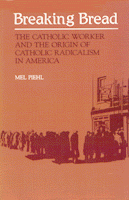

<body bgcolor="#FFFFFF" text="#000000" link="#0000FF" vlink="#CC0000" alink="#CC0000"><center><hr width="350" size="1" align="center" noshade>Where did the Catholic Worker movement for social change, one of the most vital in American history, come from?<hr width="350" size="1" align="center" noshade><p><a href="https://cdcshoppingcart.uchicago.edu/Cart/ChicagoBook.aspx?ISBN=9780877222576&&PRESS=temple" target="_top">Buy this book!</a> | <a href="https://cdcshoppingcart.uchicago.edu/Cart/Cart.aspx?PRESS=temple" target="_top">View Cart</a> | <a href="https://cdcshoppingcart.uchicago.edu/Cart/Cart.aspx?PRESS=temple" target="_top">Check Out</a></p><p></p></center><!--none//--><h1>Breaking Bread</h1>
<H2>The Catholic Worker and the Origin of Catholic Radicalism in America</H2>
<h3>Mel Piehl</h3>
<P>cloth 0-87722-257-6 $37.95, Oct 82, <FONT COLOR=#990033>Out of Print</FONT>
<br>paper 0-87722-353-X $14.95, Feb 84, <FONT COLOR=#990033>Out of Print</FONT>
<BR> 225 pp
145&nbsp;tables
</P><BLOCKQUOTE><I>"A magnificent and invaluable examination of the Catholic Worker phenomenon and an unassailable argument for that phenomenon' indispensability to any discussion of the relationship between the Roman Catholic church and American culture."</I>
<br>&#151<b><I>National Catholic Reporter</I></b><I></I></BLOCKQUOTE>
<p>The Catholic Worker is the name for a movement, a radical newspaper, and a number of "Houses of Hospitality" and farms for the poor. These places of refuge, most prominently St. Joseph's House of Hospitality in New York City, where Dorothy Day resided from 1933 to 1980, were also gathering places for intellectuals and activists, anarchists and radicals, the socially and religiously concerned.
<p>Where did this movement for social change, one of the most vital in American history, come from? The author comments with sensitivity on the movement's founders, Dorothy Day and Peter Maurin, and on contradictions in their personalities, while he also pulls from European Catholicism and the American Social Gospel the historical context for the Catholic Worker.
<p>What was it like to be part of? The Catholic Worker presented very plainly the dilemma of personal commitment to social change and religious faith, a rich blend of the radical and the conservative. It asked that one not only plan for social justice of the future, but feed and live with the poor today.
<p>Not surprisingly, there were many disputes within the Catholic 'Worker over fundamental matters of principle and practice. The expression of pacifism during World War II was a particularly sensitive issue. Catholic pacifism is a stance that has persisted through the Cold War to the present-day protests of the Berrigans.
<p>The Catholic Worker has challenged several generations of American intellectuals to examine the nature of their commitment to social change. Its relationship with the establishment Church was a stormy one. To the Church and American society, the Catholic Worker has been a gadfly and a conscience.
<BR>&nbsp;<h2>Reviews</h2>
<p><I>"...Graceful and intelligent...it reckons with Dorothy Day not just as our lady of the bread lines, but as a far-sighted religious thinker whose ideas are now being debated in such an unlikely quarter as the American Council of Bishops."</I>
<br>&#151<b><I>The New York Times</I></b>
<p><I>"A ground-breaking study, readable and stimulating."</I>
<br>&#151<b><I>Publishers Weekly</I></b>
<BR>&nbsp;<H2>About the Author(s)</H2>
<P><b>Mel Piehl</b> is Assistant Professor of Humanities at Valparaiso University.</P>
<BR><H2>Subject Categories</H2>
<p><A HREF="/tempress/american.html" TARGET="_top">American Studies</a>
<BR><A HREF="/tempress/philosophy.html" TARGET="_top">Philosophy and Ethics</a>
<BR><A HREF="/tempress/religion.html" TARGET="_top">Religion</a>
</p>
<p align="center"><a href="https://cdcshoppingcart.uchicago.edu/Cart/ChicagoBook.aspx?ISBN=9780877222576&&PRESS=temple" target="_top">Buy this book!</a> | <a href="https://cdcshoppingcart.uchicago.edu/Cart/Cart.aspx?PRESS=temple" target="_top">View Cart</a> | <a href="https://cdcshoppingcart.uchicago.edu/Cart/Cart.aspx?PRESS=temple" target="_top">Check Out</a></p><p><font face="Arial" size="1"><a href="copyright.html" onMouseOver="window.status='Web Copyright Policy';return true;" onMouseOut="window.status=''" title="Web Copyright Policy">&copy;</a> 2015 <a href="http://www.temple.edu" target="new" onMouseOver="window.status='Link to Temple University home page';return true;" onMouseOut="window.status=''" title="Link to Temple University home page">Temple University</a>. All Rights Reserved. http://www.temple.edu/tempress/titles/261_reg.html</font></p>